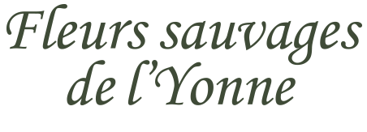
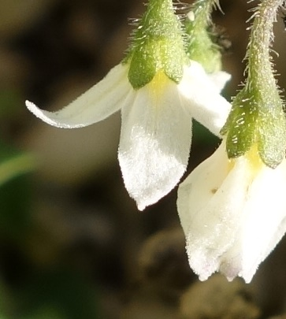
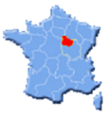
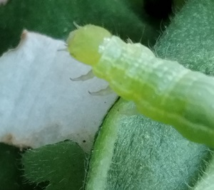
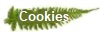

| https://fleursauvageyonne.github.io/ |

et d'ailleurs |

Solanum nigrum,
la Morelle noire, l'herbe à gale, le crève-chien
une espèce appartenant à une tribu qui devrait vous intéresser... avant qu'elle ne disparaisse
car sa famille bien connue se recompose ! |
| FLeurs SauVages de l'Yonne et d'ailleurs, nommé plus couramment en abrégé FLSVY, est un modeste herbier, initialement icaunais c'est-à-dire de l'Yonne, un département français dont le chef-lieu est Auxerre et dont vous pourriez suivre l'évolution du climat de 2005 à 2026. |
 |
En plus d'être un département, l'Yonne est une rivière avec ses affluents aux vallées fleuries entre autres de nombreuses plantes tinctoriales.
Une occasion pour découvrir les tannins. |
| Cet herbier a été imaginé en 2005 par Claude Richard | | botaniste amateur et randonneur, pour que les randonneurs de tous âges, de tous lieux et de tous poils, botanistes amateurs débutants et curieux (ignorant tout de la phytosociologie, de la génétique végétale ou de l'horticulture) puissent découvrir, en cliquant sur une pastille colorée

une fleur, ses fruits, ses graines, ses racines et, pour éviter toute confusion avec une plante comestible, sa toxicité
sans oublier ses agresseurs parfois surprenants

Paris, 12 juillet 2026
La Bande à Basile - La chenille
après l'avoir reconnue rapidement grâce à sa couleur, même imprécise, ou s'assurer encore plus rapidement qu'un nom latin ou français d'une fleur qu'ils ont en mémoire correspond bien à celle qu'ils ont devant les yeux. Une illusion sans doute quand on pense, entre autres, aux 83 synonymes de cette Poaceae qu'est le pied de poule, Dactylis glomerata L., 1753. Poaceae qu'est le pied de poule, Dactylis glomerata L., 1753.
|
FLeurs SauVages de l'Yonne et d'ailleurs
toujours sans abandonner l'idée que la paix est une fleur
sans toxicité et porteuse de VIE
Peace Piece - Bill Evans (1929-1980)
Jouer le... JAZZ |
vous propose également- de découvrir, dans les sols, la vie cachée et la mort de tant d'espèces, vivantes ou qui le furent, sans lesquelles les fleurs ne pourraient exister, elles dont les horloges circadiennes sont différentes des nôtres ;
- et de vous poser des questions comme celles-ci :
| ◦ Que sont | | les 5 (cinq) couches de l'atmosphère ? |
| ◦ Les causes du réchauffement climatique | | ne se trouveraint-elles pas également dans les pollutions de la mésosphère dite ignorosphère ? |
| ◦ Les pollutions | | générée par les constellations de satellites et de leurs débris qui tournent autour de la Terre n'aurait-elle pas des répercussions sur la qualité de l'air et sur l'environnement, en perturbant les écosystèmes et les horloges biologiques des êtres vivants qui disparaissent ou qui deviennent chaque jour plus fous s'ils sont humains, répandant leurs pollutions, fruits de leur chimie (métaux lourds, plastiques, pesticides...), de leur physique (pollution lumineuse, retombées radioactives), de leurs bruits (pollution sonore) au-delà même de la Planète sur laquelle ils vivent et qu'ils avaient baptisée Planète bleue en 1972 ? |
| ◦ Que savons-nous vraiment | | de la thermodynamique ? |
Odd Behavior - Au delà des arbres |
Bienvenue
Welcome / Bienvenidos / Välkommen / Benvenuto
добро пожаловать / مَرْحَبا / Chào mừng
いらっしゃいませ / 欢迎
pարի գալուստ
|
| ►  ► |
Conception/maintenance informatiques
Annick Jani
Mise à jour : JUILLET 2026
 2005 à 2026 2005 à 2026 |
|
{kind=link}